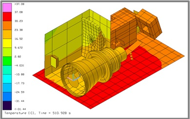

THERMAL ENGINEERING SERVICES
Perihelion Engineering Services provides expert-level thermal engineering consulting across the entire spacecraft lifecycle. These include, but are not limited to:
- Thermal system architecture for SmallSats and deep space missions
- Thermal Desktop™, RadCAD, ANSYS Icepak, and FloCAD modeling
- Multiphysics and transient thermal modeling
- Thermal vacuum test planning, execution, and correlation
- Radiative and conductive interface control and hardware design
- MLI blanket design and integration, heater circuit layout
- Thermal control system sizing and trade studies
- Documentation: test plans, reports, and interface control documents
- Support for design reviews (PDR/CDR), NASA compliance, and mission assurance
- Python, FORTRAN, MATLAB scripting for custom post-processing
Tools & Technology
- Thermal Desktop
- ANSYS
- Radian
- COMSOL
- FORTRAN
- MATLAB
- C++
- Python
- SolidWorks
- AutoCAD
Select Flight Programs
- MBR Explorer – Thermal Analyst (UAESA)
- TSIS-2 – Lead Thermal Engineer (NASA)
- Libera – Thermal Analyst (NOAA)
- CIRBE – Lead Thermal Engineer (AFRL)
- SUDA – TVAC Test Helper (NASA)
Contact
Email: paris.buedel@colorado.edu
Phone: 919.525.4909
LinkedIn: linkedin.com/in/paris-buedel